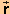
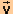

In all of the following Activities, keep all of the applet's eight slider settings fixed at their default values except for that of the time step Dt. Change that as instructed in the Activities.
Activities
Play the motion, and pause it at several instants. Make a drawing of the mass point's path and of the mass point's position and velocity vectors at the instants when you pause the motion.
In a sentence or two, characterize how the direction of the velocity vector is related to that of the position vector and how the velocity vector is oriented relative to the mass point's path. Can you confirm the following general statement about the direction of the velocity vector?
The velocity vector at a given instant points in the direction in which the tip of the position vector is moving at that instant, which is the direction of the tangent to the mass point's path at that instant.
What do you observe about the magnitude of the velocity vector during the motion?
Continuing from Activity 1, click Rewind and set the applet to the Incremental mode and the time step to Dt = 0.50 s.
Use the Step button to take one step into the motion. Make a drawing of the position vectors i and f at the beginning and end of the time step, the displacement vector D during the time step, and the velocity vectors i and f at the beginning and end of the time step. Estimate the angles between the initial and final velocity vectors and between the displacement and initial velocity vectors.
In a sentence or two, describe how the direction of the displacement vector is related to those of the initial and final velocity vectors and by how much the directions of all these vectors differ.
Click Rewind, reduce the time step to Dt = 0.25 s, and again take the first step into the motion. Again, draw all vectors and estimate the angles between the initial and final velocity vectors and between the initial velocity and displacement vectors.
Again, describe how the direction of the displacement vector compares to those of the initial and final velocity vectors and how the displacement vector during the 0.25-s time step compares to that during the 0.50-s time step.
Click Replay, and repeat these observations once more for a time step Dt = 0.10 s.
Velocity is defined as the limit of the ratio D/Dt as Dt approaches 0. As Dt approaches 0, does the direction of
The displacement D forms a cord of the mass point's path. Do you observe that as Dt approaches 0 the direction of the cord approaches that of the tangent to the path at the mass point's initial position?
In what sense do the observations in Activity 2 confirm the general statement from Activity 1?
The velocity vector at a given instant points in the direction in which the tip of the position vector is moving at that instant, which is the direction of the tangent to the mass point's path at that instant.
Continuing from Activity 2, click Rewind, change the step size back to Dt = 0.50 s, and display the Data box. Make sure the applet is still in the Incremental mode and that no other settings have changed.
Take one step into the motion. Record the values of D and Dt, and work out the ratio D/Dt in terms of its x,y scalar components. Compare this ratio to the initial velocity i.
Using the x,y scalar components of D/Dt worked out above and the x,y scalar components of i listed in the Data box, draw the two vectors D/Dt and i. Draw them with their tail ends joined for better comparison. For better accuracy, you may want to draw the vectors on graph paper.
As in Activity 2, repeat this with time steps equal to 0.25 s and 0.10 s.
Does D/Dt approach i as the size of the time step decreases?
The applet will let you choose time steps smaller than Dt = 0.10 s, but the values of D/Dt will become unreliable as the time step becomes too small because of a loss of significant figures. This is evident visually as well because the displacement vector D becomes hard to recognize.